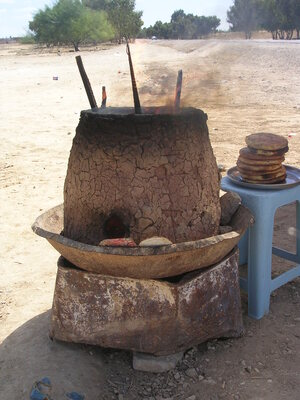

Home
Reports
⇐
͵ⲃ̅ⲩ̅ϥ̅ⲅ̅
⇒
Reset
Dev
ϫⲁϩⲛⲓ
B
(ⲧ)
(
noun feminine
)
baking-oven

2493-1-1
baking-oven
1: baking-oven
complete
798b
ϫⲁϩⲛⲓ
B
nn f,
baking-oven
: K 132
ϯϫ.
طابونة
.
Cf
HAWinkler
Volkskunde
127.
See also:
view
ϭⲣⲱⲡ
B
(
noun masculine
) oven
2611
view
ⲁϣ
S
O
(
noun masculine
) furnace, oven [
καμινος
]
540
view
ⲧⲣⲓⲣ
S
A
ⲑⲣⲓⲣ
B
ⲧⲣⲓⲗ
,
ⲧⲗⲓⲗ
F
(
noun feminine
) oven [
κλιβανος
]
1633
view
ϩⲣⲱ
S
B
ϩⲣⲟⲩ
A
ⲉϩⲣⲱ
B
(
noun feminine
) oven, furnace [
καμινος
,
κλιβανος
,
χωνευτηριον
]
888